AI 영상 제작 실습
오늘 수업의 흐름
시작하기
오늘 만들 것
- 영상 1개: 과잠을 입은 내 캐릭터가 고려대학교 본관 앞 중앙광장을 걸으면서 인사하는 영상 (15초)
- 영상 스토리보드
편한 작업을 위한 팁
만든 그림과 영상은 바로 내 컴퓨터에 저장하기
파일 이름에 번호를 붙이면 찾기 쉬움. 예: ,
AI 영상 제작 도구 탐색 5분
· 무료로 쓸 수 있는 횟수와 요금은 자주 바뀌기 때문에 무료 횟수를 다 쓸 경우 다른 아이디로 로그인하여 사용하기.
· 다른 도구로 바꾸어 작업해도 좋음.
① 이미지 제작하기
| 도구 | 잘하는 것 | 가격 |
|---|---|---|
| ★ Google Flow | 이미지 제작, 캐릭터 저장 후 다시 불러오기 | 무료로 시작 |
| Gemini | 이미지 제작, 이미지 수정 | 무료로 시작 |
| ChatGPT | 설명을 잘 알아듣고 애니메이션 그림을 감성 있게 그림 | 무료로 시작 |
| Canva | 그림을 만들고 바로 디자인, 포스터까지 제작 가능 | 무료로 시작 |
| Midjourney | 예술 작품 같은 아주 멋진 이미지 제작 | 유료 |
② 캐릭터 움직이기·말하게 하기
| 도구 | 잘하는 것 | 가격 |
|---|---|---|
| ★ Google Flow (Veo) | 이미지, 동영상 제작 | 무료 횟수 제한 |
| Hedra | 그림 + 대사로 영상 제작 | 무료로 시작 |
| HeyGen | 사람처럼 말하는 아바타 | 무료로 시작 |
| Kling | 자연스러운 움직임 | 무료로 시작 |
| Runway | 영화 같은 장면 | 유료 위주 |
③ 목소리(내레이션)
| 도구 | 잘하는 것 | 가격 |
|---|---|---|
| ★ CapCut 텍스트 음성 변환 | 편집하면서 바로 목소리 넣기 가능 | 무료로 시작 |
| Vrew AI 목소리 | 글을 붙여 넣으면 한국어 목소리로 읽어 줌. 자막과 함께 쓰기 편함 | 무료로 시작 |
| ElevenLabs | 세계에서 가장 많이 쓰는 AI 목소리. 아주 자연스러움 | 무료로 시작 |
| 클로바더빙 · 타입캐스트 | 한국 회사 제품. 한국어 목소리가 많음 | 무료로 시작 |
④ 자막·편집
| 도구 | 잘하는 것 | 가격 |
|---|---|---|
| ★ CapCut | 세계에서 가장 많이 쓰는 쉬운 편집 도구, 휴대폰 앱 제공 | 무료로 시작 |
| ★ Google Vids | Google 계정과 연동되는 영상 생성 + 편집 도구 | 무료로 시작 |
| Vrew | 한국어 자막 자동 생성. 문서 수정 편집 방식 | 무료로 시작 |
| Canva · Clipchamp | Canva는 웹, Clipchamp는 윈도우 | 무료로 시작 |
고려대학교 유학생 캐릭터 이미지 만들기
먼저 내 캐릭터 정보를 노란 칸에 쓰기. 쓰지 않으면 예시(린)로 만들어짐.
내 캐릭터 정보
그림체: 실제 사진
따라 하기
- Google Flow(flow.google.com)를 열고 화면 아래 + 새 프로젝트 클릭
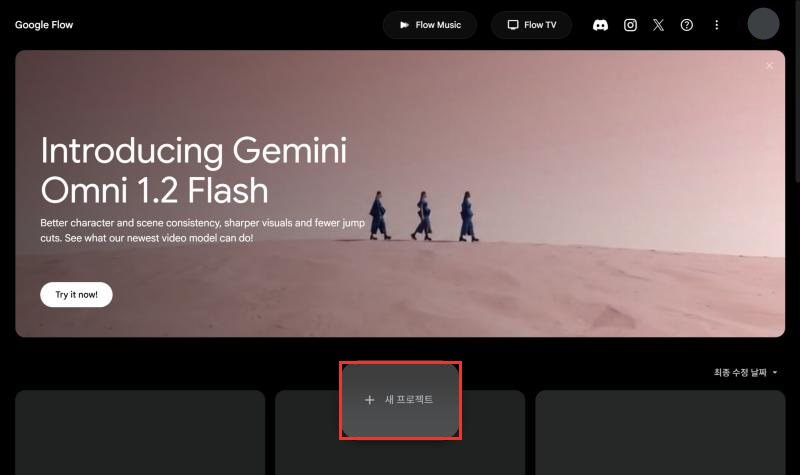
아래쪽 가운데 + 새 프로젝트 클릭 - 왼쪽 메뉴에서 캐릭터 클릭
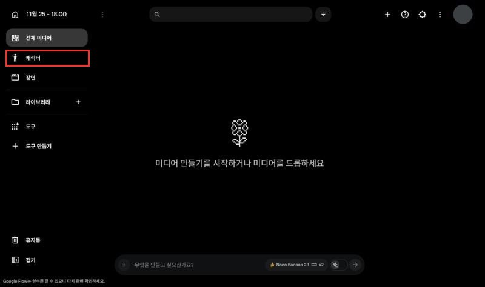
왼쪽 메뉴의 캐릭터 클릭 - 아래 프롬프트를 복사해서 캐릭터를 설명해 주세요… 칸에 붙여 넣고 → 클릭
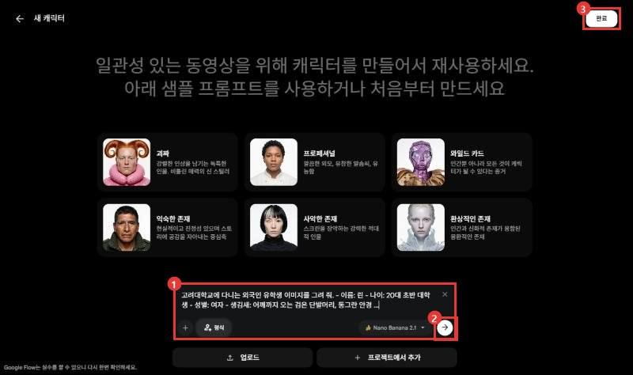
① 입력창에 붙여 넣기 → ② → 클릭 → 그림이 마음에 들면 ③ 완료 - 마음에 드는 그림이 나오면 오른쪽 위 완료를 눌러 캐릭터 저장하기
그림 수정
다음 단계부터 계속 이 그림을 저장한 캐릭터 이름으로 불러옴.
또는 저장하여 이미지 첨부 ()
과잠 입히기
준비: 과잠 이미지
- 아래 버튼을 눌러 과잠 이미지를 바탕화면에 다운로드하기
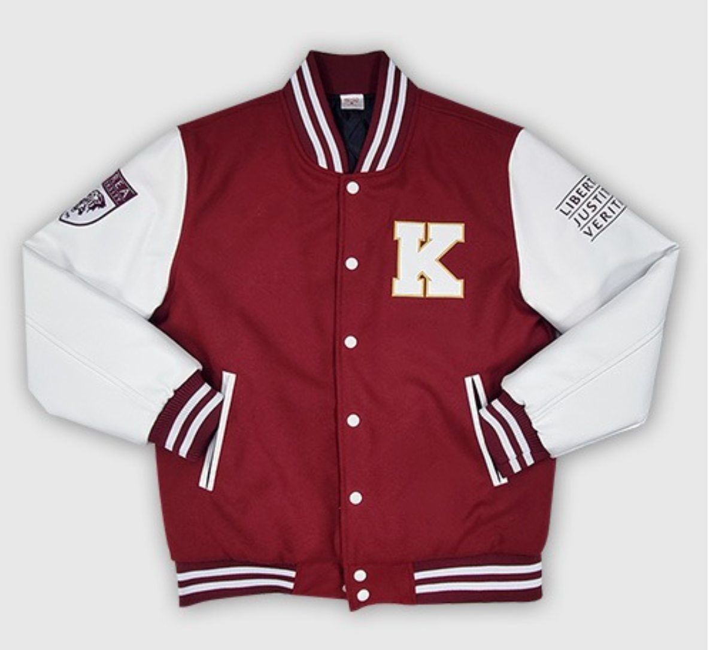
버튼이 안 되면 위 그림을 오른쪽 클릭(휴대폰은 길게 누르기) → 이미지를 다른 이름으로 저장
- Flow 입력창에서 ① @를 눌러 저장한 캐릭터 이름 클릭 → ② 과잠 사진 올리기
사진 올리기: 입력창 왼쪽 + → 왼쪽 아래 미디어 업로드. 저장한 캐릭터는 같은 창의 캐릭터에서도 고를 수 있음.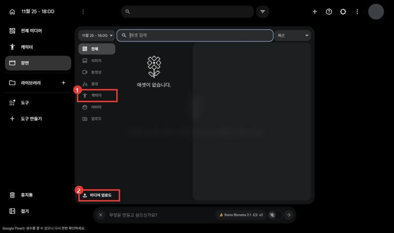
+ 버튼 → ① 캐릭터에서 내 캐릭터 고르기 / ② 미디어 업로드로 과잠 사진 올리기 - 아래 프롬프트를 복사 후 입력하기

완성되면 로 저장하기
더 해 보기: 옷·소품 바꾸기
@로 캐릭터를 선택하거나 파일을 올린 뒤 하나씩 보내 보기
한 번에 하나만 바꿔야 잘 됨.
고려대학교 중앙광장을 걸으며 말하기
두 번 나누어 만들기
① 본관 앞 중앙광장에 세우기
- Flow 입력창에서 + 버튼으로 올리기 (2단계 그림 참고)
- 아래 프롬프트를 보내고, 완성된 그림을 3_중앙광장.png로 저장하기
인터넷에서 찾은 사진은 저작권이 있을 수 있으니 유의
더 해 보기: 장소 바꾸기
@로 캐릭터를 선택하거나 파일을 올린 뒤 보내 보기
② 걸으며 말하는 영상 만들기
캐릭터 대사 쓰기.
영상 길이는 최대 8초
8초 = 40자 안쪽으로 짧게 써야 함.
- 입력창 오른쪽 설정 버튼(Nano Banana)을 눌러 동영상 → 프레임 고르기. 생성 개수는 x1로 하면 크레딧 절약
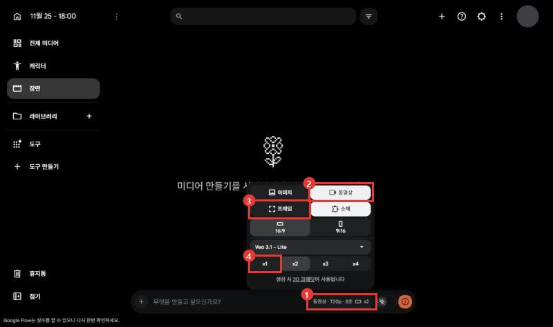
① 설정 버튼 → ② 동영상 → ③ 프레임 → ④ x1 - 입력창 위 시작 칸 클릭 → 미디어 업로드로 3_중앙광장.png 올리기
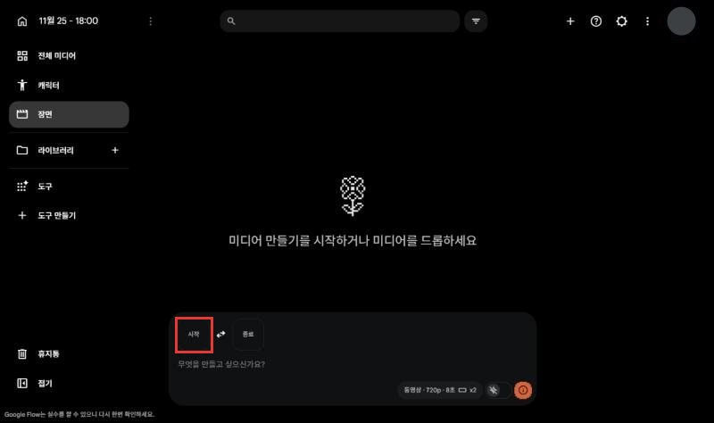
입력창 위 시작 칸 클릭 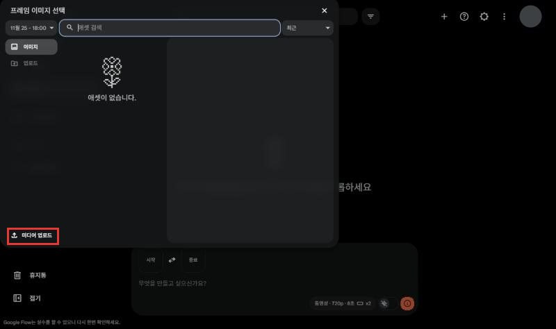
왼쪽 아래 미디어 업로드 클릭 → 3_중앙광장.png 고르기 - 아래 프롬프트를 복사해서 보내기
- 영상을 눌러 다운로드 → 4_동영상.mp4로 저장하기
Hedra는 입 모양이 아주 정확함. 대신 걷는 움직임은 작음.
- hedra.com에 구글 계정으로 로그인하기
- Create(만들기) → 캐릭터 영상 메뉴 고르기
- 이미지 칸에 3_중앙광장.png 올리기
- 음성 칸에서 글로 쓰기(Text)를 고르고 아래 대사 붙여 넣기. 목소리는 한국어를 지원하는 목소리를 골라 들어 보기
- 프롬프트 칸에 아래 움직임 프롬프트를 붙여 넣고 Generate(만들기) 클릭
영상 확인하기
- 얼굴과 과잠이 1·2단계 그림과 같은지 확인
- 영상의 자연스러움 확인
내레이션·자막 넣기
자막과 목소리 넣기 (CapCut)
- capcut.com(웹)이나 CapCut 앱 열기
- 가운데 + 업로드하려면 클릭하세요를 눌러 4_동영상.mp4를 넣고, 아래 타임라인으로 끌어 놓기
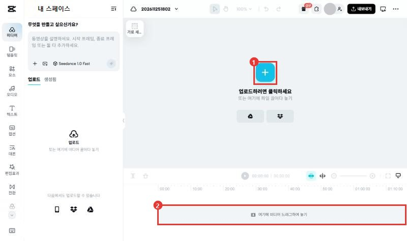
① 가운데 + 클릭 → 영상 고르기 → ② 아래 타임라인으로 끌어 놓기 - 왼쪽 메뉴 캡션 → 자동 캡션 → 언어 한국어를 고르면 자막이 생김. 틀린 글자 고치기
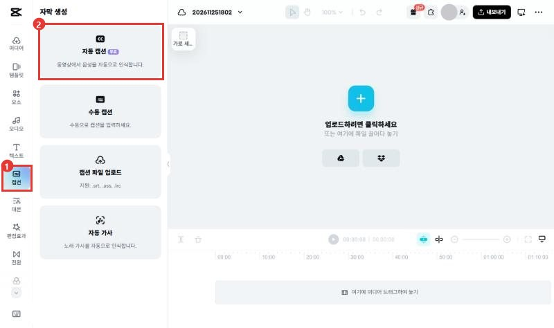
① 왼쪽 캡션 → ② 자동 캡션 - 왼쪽 메뉴 텍스트 → 본문 추가를 누르고 화면의 글자를 내레이션 원고로 바꾸기
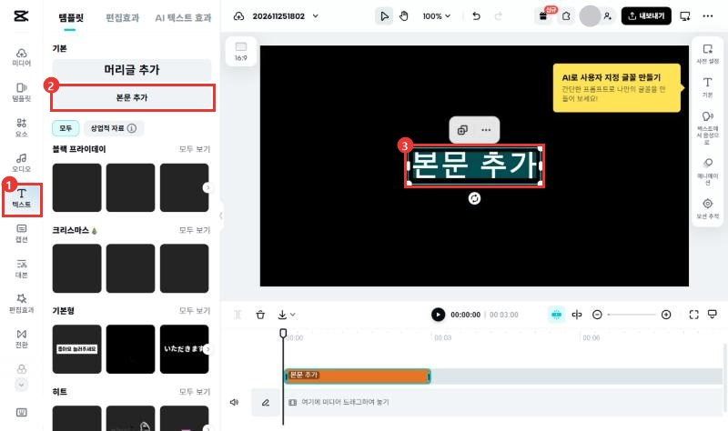
① 왼쪽 텍스트 → ② 본문 추가 → ③ 글자 상자를 눌러 원고 입력 - 글자를 누른 상태에서 오른쪽 메뉴 텍스트에서 음성으로 → 카테고리에서 목소리 고르기
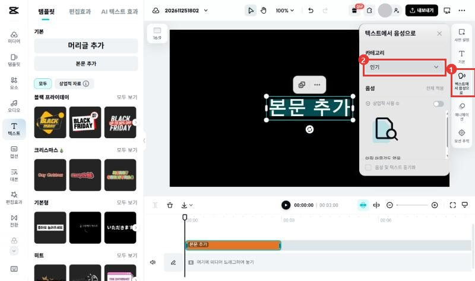
① 오른쪽 텍스트에서 음성으로 → ② 카테고리(예: 내레이션) → 목소리 고르기 - 오른쪽 위 내보내기 → 다운로드 → 형식 MP4 확인 → 내보내기를 눌러 (내 이름) 영상 실습.mp4로 저장하기
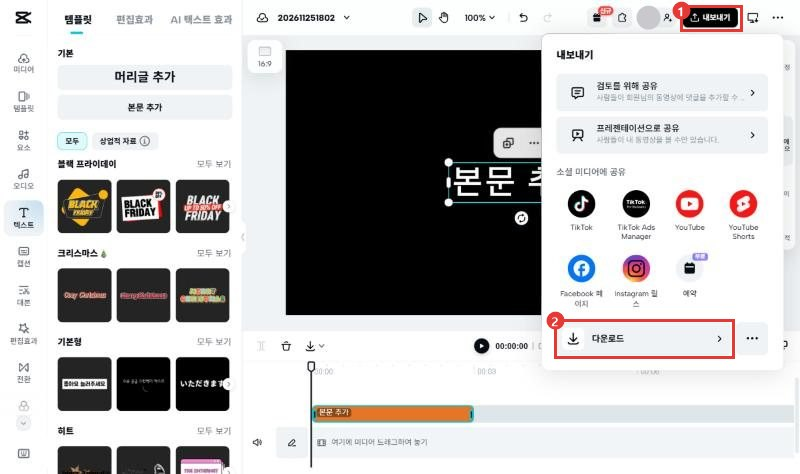
① 오른쪽 위 내보내기 → ② 아래 다운로드 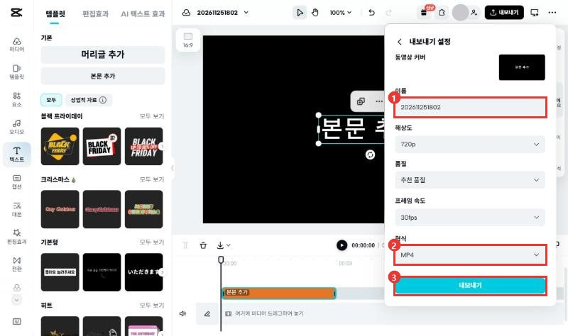
① 이름을 (내 이름) 영상 실습으로 바꾸기 → ② 형식 MP4 확인 → ③ 내보내기
· 한 줄에 15자 정도 · 화면 아래 가운데 · 배경과 잘 구분되는 색
스토리보드 만들기
스토리보드는 영상의 설계도를 말함.
3·4차시에는 조별로 스토리보드를 보면서 영상을 제작함.
① AI에게 스토리보드 초안 받기
② 내 스토리보드 쓰기
AI 초안을 보고 내 생각으로 고쳐서 아래 표에 쓰기.
| 장면 | 장소·화면 설명 | 캐릭터 대사 | 내레이션·자막 | 길이 |
|---|
· 장면 하나는 8초 안 · 장면마다 장소나 행동이 다름 · 처음은 인사, 끝은 마무리 인사
마무리
제출하기
- (내 이름) 영상 실습.mp4 (자막·내레이션이 들어간 영상)
- 스토리보드 (PDF 또는 구글 문서 링크)
아래 링크에 동영상 올리기
AI 영상 실습 동영상 업로드 (1126)AI로 영상을 만들 때 주의사항
- 친구나 유명한 사람의 얼굴 사진을 허락 없이 쓰지 않기
- 다른 사람이 찍은 사진, 그림, 음악은 저작권 확인하기
- 영상 시작 전 "이 영상은 AI로 만들었습니다"라고 쓰기
- 사실이 아닌 내용을 진짜처럼 보이게 만들지 않기
문제가 생겼을 때
캐릭터 얼굴이 그릴 때마다 달라짐
Flow에서 매번 @로 저장한 캐릭터를 불러오거나 파일을 함께 올리기. 그리고 아래 프롬프트 함께 보내기.
과잠의 글자가 이상하게 나옴
AI는 글자를 잘 못 쓰니 글자를 짧게 하거나 아예 빼 달라고 하기.
손가락이나 몸 모양이 이상함
동영상 만들기 메뉴가 없음
계정이나 나라에 따라 메뉴가 없을 수 있음. 무료 횟수를 다 쓴 경우에도 마찬가지.
방법 B: Hedra로 제작하기
영상 속 한국어 발음이 어색함
- 대사를 더 짧고 쉬운 문장으로 바꿔 보기
- 숫자와 영어는 한글로 쓰기. 예: 2026년 → 이천이십육 년, KU → 케이유
- 그래도 어색하면 CapCut에서 원래 소리를 끄고 텍스트 음성 변환 목소리로 바꾸기
"만들 수 없어요"라는 답이 나옴
어린 아이, 실제 사람 이름, 유명인, 회사 로고가 들어가면 AI가 거절할 수 있음.
그 말을 빼고 다시 보내기. 예: '고려대학교 로고' → '가슴에 KU 글자'